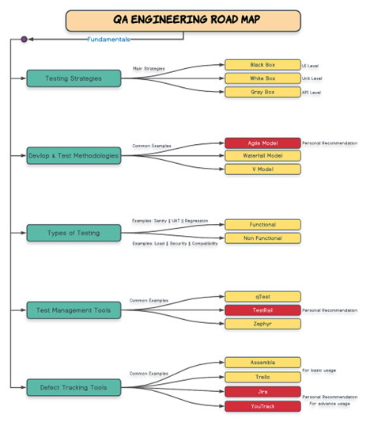
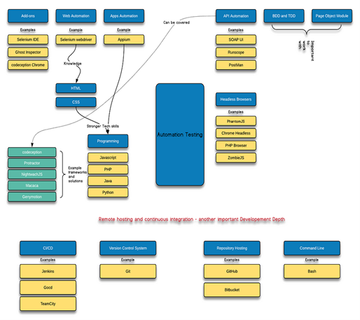

Introduction to Software Testing and Test Case Design Techniques
Table of Contents:
- Introduction to Testing
- Test Case Design Techniques
- QA Engineering Roadmap
- Automation Testing Roadmap
- Automation Testing
- Web Automation
a. Working with Selenium
b. Working with Playwright
c. working with Cypress - API Automation
a. API Automation - Csharp
b. API Automation - Java - Design the Roboust Framewrok -C#
- GEN AI in Testing
- Automation with Robot Framework
- Performance Testing
- GraphQL Testing
- Mastring Xpath and CSS
- Websites for Automation Practice]
- CI CD for you TestAutomation
- Automation Interview Question Part-1
- Testing interview Part -02
Introduction to Testing
Software testing is a critical process in software development that aims to identify defects or errors in a software application before it is released to end-users. It ensures that the software meets the specified requirements and functions as expected. Effective testing improves software quality, reliability, and user satisfaction.
Test Case Design Techniques in Software Testing
Test case design techniques are essential for planning, designing, and implementing tests for software applications. These techniques can be classified into three major groups:
a. Specification-Based or Black-Box Techniques
Black-box testing focuses on testing the software system based on its functional requirements and specifications without any knowledge of the underlying code or system structure.
-
Boundary Value Analysis (BVA):
- BVA identifies errors at the input domain's boundary.
- Example: Testing a text box that requires the user to enter a number between 1 and 10.
- Boundary values: 1 and 10.
- Test values: Min (1), Min+1 (2), Min-1 (0), Max (10), Max+1 (11), Max-1 (9).
-
Equivalence Partitioning (EP):
- EP reduces the number of test cases by partitioning input data into classes where all elements within a partition are expected to be treated the same by the software.
- Example: If a program requires an input of numbers between 1 and 100, an EP test would include a range of values, such as 1-50 and 51-100, and numbers outside that range, such as -1 or 101.
-
Decision Table Testing:
- This technique involves designing test cases based on decision tables, which represent different combinations of inputs and their corresponding outputs based on various conditions and scenarios, adhering to business rules.
🔹 Example:
Condition A Condition B Action 1 Action 2 T T ✓ T F ✓ F T ✓ F F ✗ ✗ 4. State Transition Diagrams (STD): * Developers use STDs to test software with a finite number of states of different types. A set of rules that define the response to various inputs guides the transition from one state to another. -
Use Case Testing:
- This involves designing test cases to execute different business scenarios and end-user functionalities.
b. Structure-Based or White-Box Techniques
White-box testing involves testing the internal structures or components of software applications. In this approach, the tests interact with the code directly.
-
Statement Testing and Coverage:
- This technique involves executing all the executable statements in the source code at least once.
-
Decision Testing/Branch Coverage:
- Also known as branch coverage, this technique validates all the branches in the code by executing each possible branch from each decision point at least once.
-
Multiple Condition Testing:
- This technique aims to test different combinations of conditions to achieve 100% coverage.
c. Experience-Based Techniques
Experience-based testing relies on the testers’ skill, intuition, and experience to anticipate potential errors in the product.
-
Error Guessing:
- This testing technique relies on the testers’ skill, intuition, and experience to anticipate potential errors in the product.
-
Exploratory Testing:
- This technique is used to test applications without any formal documentation.
QA Engineering Roadmap

Automation Testing Roadmap
- Learn a Languages - JavaScript, C#, Java, or Python
- Learn all methods suported by tools - Playwright, Selenium, Restsharp, etc.
- Unit testing
- UI
- API
- DB
- Visual testing
- Version control System for remote execution - Github, Git, Azure
- Run on remote machine
- CI/CD - Jenkins, Git Actions,
- Run in Container - Docker

Software testing lifecycle:
flowchart TD
A[Requirement Gathering & Analysis] --> B[Planning]
B --> C[System Design]
C --> D[Implementation (Coding)]
D --> E[Testing]
E --> F[Deployment]
F --> G[Maintenance]
style A fill:#f9f,stroke:#333,stroke-width:2px
style B fill:#bbf,stroke:#333,stroke-width:2px
style C fill:#aff,stroke:#333,stroke-width:2px
style D fill:#aaf,stroke:#333,stroke-width:2px
style E fill:#faa,stroke:#333,stroke-width:2px
style F fill:#afa,stroke:#333,stroke-width:2px
style G fill:#ffd,stroke:#333,stroke-width:
Automation
Automation is a word for applications where reduce human efforts. There are include business process automation (BPA), IT automation, personal applications, business related applications, E-commerce applications such as home automation, and more.
Automation Testing
Automation testing involves using specialized tools and scripts to execute test cases, compare actual outcomes with expected results, and report findings. It helps reduce manual effort, improve accuracy, and accelerate the testing process.
Types of Automation Testing
-
Web Application Testing
Automation testing for web applications ensures that the functionality, performance, and compatibility of the application work as expected across different browsers and platforms.- Tools Used: Selenium, Cypress, Playwright, TestCafe.
-
API Testing
API testing focuses on verifying the functionality, reliability, and performance of APIs. It ensures that APIs return the correct responses for various requests and handle edge cases effectively.- Tools Used: Postman, RestAssured, SoapUI, Karate.
-
Mobile Application Testing
Mobile testing ensures that mobile applications function correctly on various devices, operating systems, and screen sizes. It includes functional, performance, and compatibility testing.- Tools Used: Appium, Espresso, XCUITest, TestComplete.
Benefits of Automation Testing
- Faster execution of repetitive test cases.
- Improved test coverage and accuracy.
- Early detection of defects.
- Cost and time efficiency in the long run.
Automation testing is a critical component of modern software development, enabling teams to deliver high-quality applications efficiently.